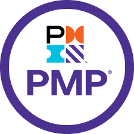
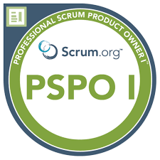
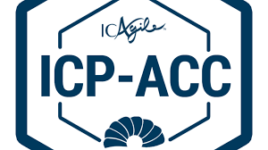
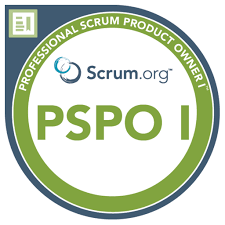
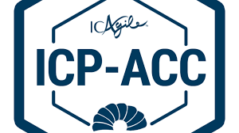
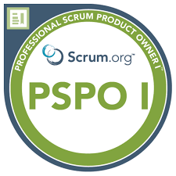
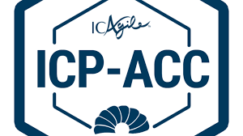
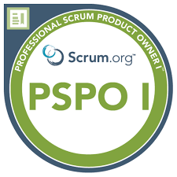
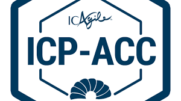

Credentials & Continuous Learning



 





Developer → MBA → Business Analyst → Programme & Product Leader
I turn complex engineering into useful products.
I didn’t start my career with Gantt charts — I started as a developer. That gave me empathy for engineers and the technical depth to challenge complexity. Later, my MBA and work as a Business Analyst sharpened my business lens and stakeholder storytelling.
Over 15+ years, I’ve led enterprise IT programs across banking, fintech, telecom, infotainment, and digital transformation domains in the US, Europe, and Asia. I’ve worn hats from Scrum Master to Agile Coach to Program Manager — driving agility, clarity, and measurable impact.
Developer roots, cloud migrations, modern stacks.
€7.5M+ portfolios managedMBA + BA experience → business empathy + product focus.
30% velocity improvementWaterfall, Agile, Hybrid. Telecom, Banking, RPA.
$3.2M+ annual savings


Today, I’m reinventing myself once again — pursuing the Executive Program in Product Management from IIT Guwahati. My goal is to transition into Product Leadership roles, building solutions that don’t just solve problems but inspire confidence in the people who use them.
Global IT Leadership
Velocity Improvement
Annual Savings
Let’s talk product, delivery, and transformation.
Download Resume Contact